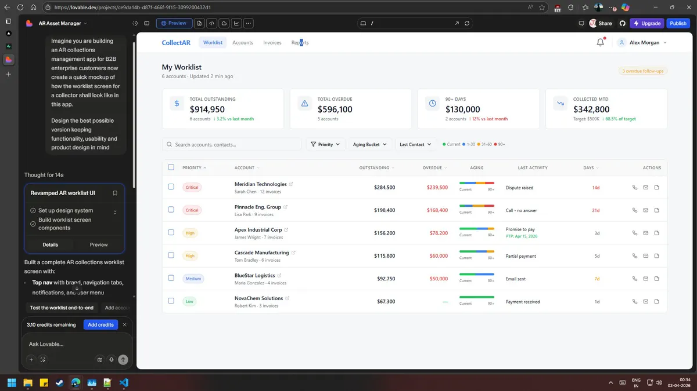
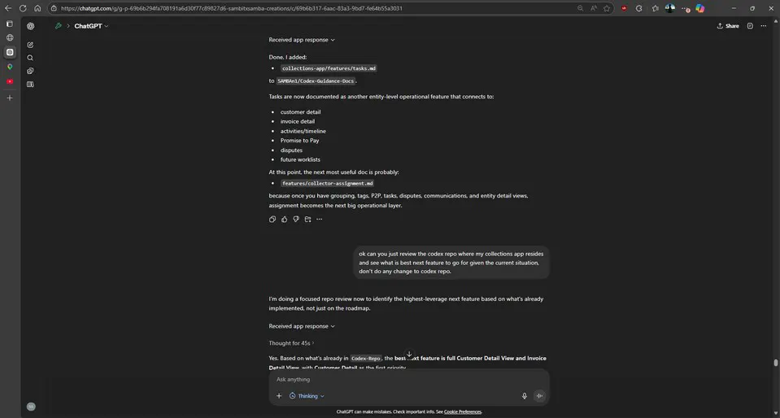
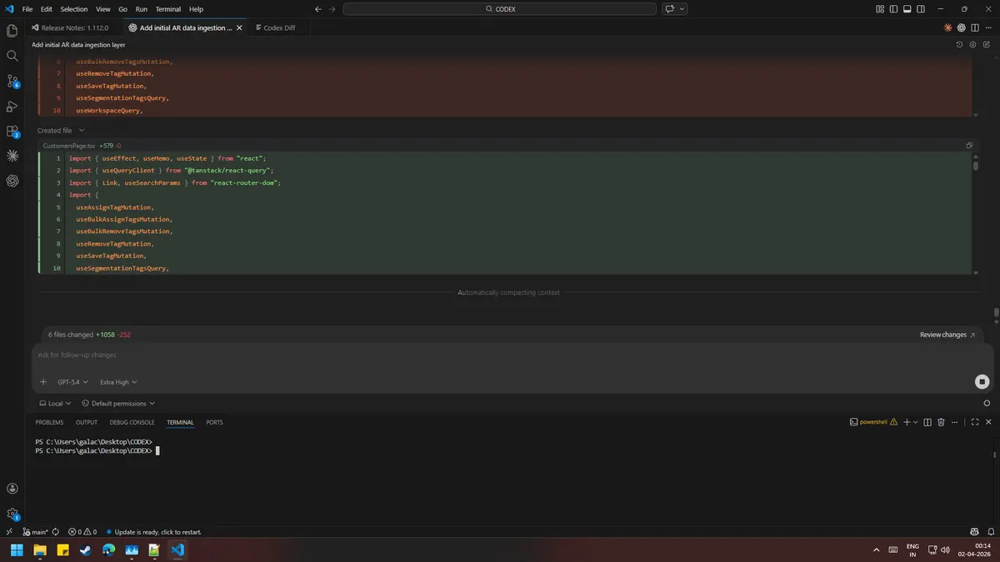
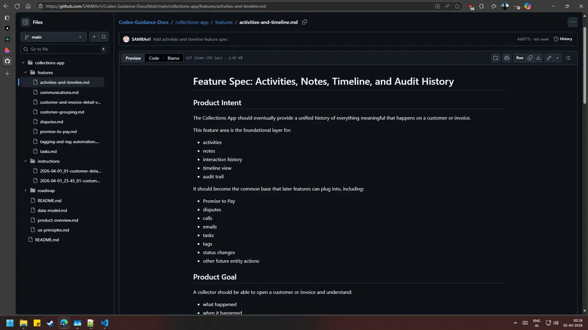
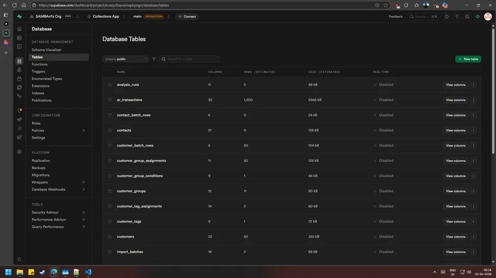
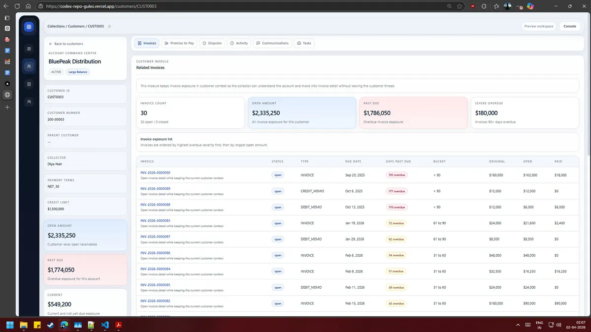
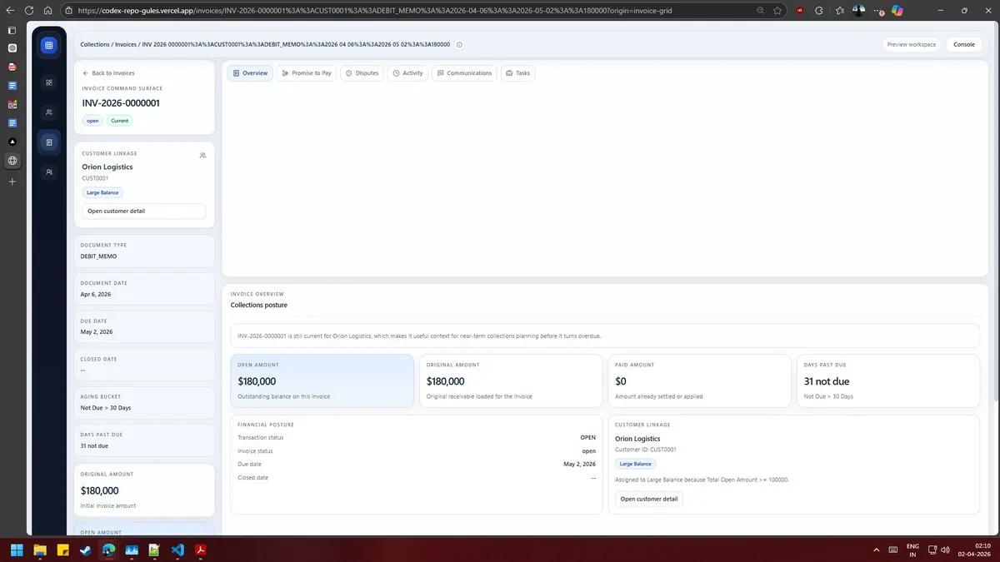

AI-NATIVE PRODUCT DEVELOPMENT
Not a Figma file. Not a slide deck. A live app with a real database, a real deploy pipeline, and a real Git history — built by a PM who refused to wait for the handoff.
THE PROBLEM
A Figma file can show you a worklist. It can't show you what happens when 400 overdue invoices hit a real segmentation rule, or whether your schema survives contact with an actual customer timeline. Every PM knows the gap between "looks right" and "works" — and every PM has felt how expensive that gap is to close through a traditional handoff.
So instead of writing a spec and waiting, this workflow treats product hypotheses as things you test directly in software — mocked, coded, deployed, and reviewed in the same week the idea showed up.
THE STACK
The power isn't any single tool — it's that they hand off to each other with almost no manual intervention. Guidance flows into code, code flows into commits, commits flow into deployments, and the PM stays the control system instead of the bottleneck.
Rapidly sketch and pressure-test UI concepts — the worklist, the grid, the detail views — before a single line of production code exists.

Turns raw ideas into structured PRDs, feature docs, and timestamped implementation instructions an agent can execute against.

Implements scoped slices against the real codebase — GitHub-connected, plan/execute, incremental. The main coding engine.

Two repos, cleanly separated: the app codebase and the guidance/docs layer. Every instruction and every diff, versioned and auditable.

Structured entities and schema instead of mock JSON — because grouping, tags, Promise-to-Pay, and disputes only get validated against real data.

Every increment ships to a reviewable URL. The distance between "I have an idea" and "here, look at it" collapses to hours.
$ vercel --prod
Inspecting build environment…
Queued → Building → Completed
✓ Production: codex-repo-gules.vercel.app (41s)
A challenger agent for when a parallel solution, an alternate framing, or an unblock is worth more than a single point of view.
parent_customer_id when a parent exists, not customer_id — handles the multi-entity case without a schema change.WHY IT MATTERS
This isn't "AI replaces engineering." It's a PM who defines intent, structures the plan, steers the agents, validates every diff, and iterates in hours instead of sprints — with a real product to show for it, not a deck.
Live routes, real data models, version control, and deployments — trade-offs surface immediately instead of at the handoff.
Lovable stays the visual discovery layer. Nothing forces one tool to carry ideation, backend modeling, and deployment control all at once.
The connected tooling reduces coordination busywork — it never replaces sequencing, scope, or acceptance criteria. That's still the PM's job.
EVIDENCE, NOT A PITCH
In under three weeks, this workflow took a collections operating surface from a blank canvas to a working shell with dashboard and grid views, customer and invoice detail surfaces, a live schema, and a live deploy — reviewable end to end, not staged for a demo.

